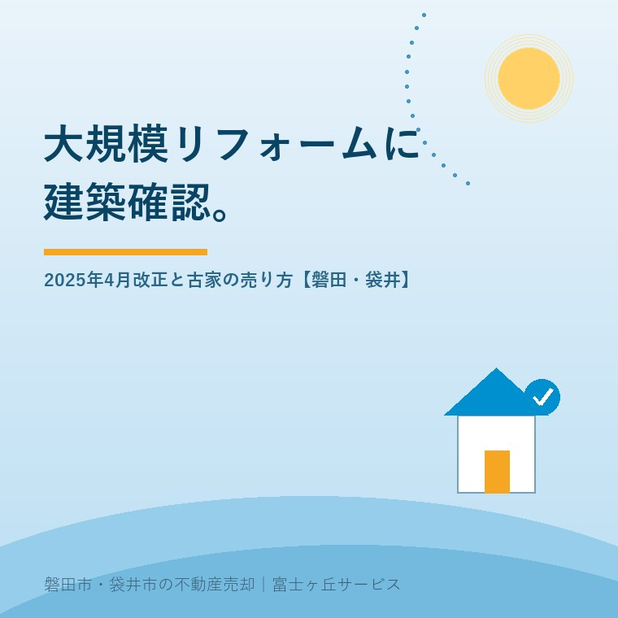

2026年8月20日｜カテゴリ：売却の進め方／建物と法規

この記事の要点
Q. 築40年の実家です。古家付きのまま売るか、壊して更地にするかで迷っています。「2025年からリフォームにも建築確認が要る」と聞いて、余計に分からなくなりました。
A. 木造2階建ては2025年4月1日から「新2号建築物」になり、主要構造部の1種以上を過半直す工事に建築確認が要ります。ただし屋根ふき材だけの葺き替えや外装材だけの張り替えは対象外です。効くのは家の古さではなく、確認済証と検査済証が残っているかどうかです。
磐田市・袋井市では、介護施設の運営から不動産事業を始めた富士ヶ丘サービスのような地域密着の会社に相談するという選択肢があります。
「うちの実家、もうリフォームでは直せないんですよね」──2025年の春から、この聞かれ方が増えました。制度の名前は難しいのに、伝わり方だけが単純になっている典型だと思います。
結論から書くと、変わったのは「工事の種類ごとの手続き」であって、「古い家の値打ち」ではありません。今日は2025年4月1日に施行された改正建築基準法を、古家を売る側・買う側の目線で整理します。数値は2026年8月20日時点で国土交通省が公表しているものです。
国土交通省は、2022年（令和4年）6月17日に公布された改正建築基準法について、施行期日を2025年（令和7年）4月1日とする内容を2024年4月16日に発表しました。この日から、原則すべての新築住宅・非住宅に省エネ基準への適合が義務付けられ、あわせて建築確認・検査の対象となる建築物の規模が見直されています。
それまで、2階建て以下の木造住宅などは「4号建築物」と呼ばれ、建築士が設計した場合には建築確認の際に構造耐力関係の審査を省略できました。これが、いわゆる4号特例です。改正後、この区分は次のように分かれました。
| 区分 | 規模（木造の場合） | 構造関係規定の審査 |
|---|---|---|
| 新2号建築物 | 2階建て以上、または平屋で延べ面積200㎡超 | 審査省略の対象外。審査あり |
| 新3号建築物 | 平屋かつ延べ面積200㎡以下 | 従来どおり審査省略の対象 |
国土交通省は、都市計画区域・準都市計画区域・準景観地区等の内側では「平家かつ延べ面積200㎡以下の建築物以外」は構造によらず構造規定等の審査が必要になり、省エネ基準の審査対象も同じ規模になると説明しています。区域の外側では、階数2以上または延べ面積200㎡超の建築物が建築確認の対象です。
200㎡は約60.5坪です（1坪＝約3.3058㎡で割り戻しました）。磐田市や袋井市の実家で、平屋かつ60坪を超える住宅はそう多くありません。この地域の木造2階建ての実家は、ほぼ全部が新2号建築物に入ります。
新2号建築物になると、新築・増築・改築・移転に加えて、大規模の修繕と大規模の模様替にも建築確認の手続きが要ります。ここで問題になるのが「大規模」の定義です。
大規模の修繕・大規模の模様替とは、建築物の主要構造部の1種以上について行う過半の修繕・模様替をいいます。
主要構造部は壁・柱・床・はり・屋根・階段の6種です。「6種のうち過半」ではなく、「1種でも、その1種の過半」で該当します。国土交通省は、2階建ての木造戸建等で行われる大規模なリフォームのうち、2025年4月以降に工事に着手するものが建築確認手続の対象になると示しています。
この「過半」を、自分の家に置き換えてみます。延べ床面積100㎡（約30坪）の木造2階建てなら、床について51㎡以上を直せば、それだけで床の過半です。1階部分だけの工事でも、その部分の主要構造部の過半を触れば該当し得ます。「家全体の半分」ではないところが、いちばん誤解されています。
一方で、対象にならない工事もはっきりしています。国土交通省は、台所・便所・浴室などの水回りのみのリフォームと、手すりやスロープの設置といったバリアフリー化の工事については、従来どおり建築確認の手続きは不要だとしています。介護のための手すりやスロープを付けても、確認申請は要らないということです。
ここが、見出しだけを読んだときにいちばん抜け落ちる部分です。国土交通省は「屋根及び外壁の改修に関する建築基準法上の取扱いについて」で、屋根と外壁の改修を次のように整理しています。
| 工事の内容 | 大規模の修繕・模様替に該当するか |
|---|---|
| 屋根ふき材のみの改修（野地板・垂木などの下地材は触らない） | 該当しない |
| 既存の屋根の上に新しい屋根材を重ねるカバー工法 | 該当しない |
| 外壁の外装材のみの改修 | 該当しない |
| 外壁の室内側からの断熱改修 | 該当しない |
| 外装材のみでも、外壁を構成する材料のすべてを改修する場合 | 該当する |
雨漏りを止めるための屋根の葺き替えは、実家じまいの現場でいちばん多く出てくる工事です。その代表格が、下地を触らない限り確認申請の対象外だという点は、もっと知られていい。「2025年から屋根も壁も確認申請」という理解のまま、直せるはずの家を諦めているご家族がいます。
意外に思われることを、もうひとつ書きます。省エネ基準への適合が義務付けられたのは新築・増築・改築であり、大規模の修繕・大規模の模様替はその対象ではありません。確認申請が要る工事だからといって、断熱性能まで現行の基準に合わせなければならない、という話とは別です。
確認申請が必要な工事をするとき、古家で最初に詰まるのは書類です。建築時の確認済証・検査済証・図面が残っていないと、設計者は「今の建物が法令に適合しているか」を一から調べるところから始めることになります。
国土交通省は、2014年（平成26年）7月に定めた「検査済証のない建築物に係る指定確認検査機関を活用した建築基準法適合状況調査のためのガイドライン」を、2025年4月1日をもって「既存建築物の現況調査ガイドライン」に統合・一本化しました。新しいガイドラインは、既存建築物の増築・改築・移転・大規模の修繕・大規模の模様替をしようとする場合に、建築士が建築基準法令の規定への適合状況を調査するための手順と方法を示すものです。
4号特例の縮小と、この調査ガイドラインの一本化が、同じ2025年4月1日に効き始めた。この2つはセットで読むべきものだと私は考えています。「大規模リフォームに確認申請が要る」という話の実体は、多くの古家にとって「確認申請の前に、法適合状況の調査が要る」という話です。
調査の費用と日数は、建物の規模と残っている資料によって大きく変わります。ここに一律の相場を書くことは、私にはできません。裏が取れていない数字を書くくらいなら、書かないほうがましだと思っています。売主の方には「設計事務所に、調査費と工期の見積りを別立てで出してもらってください」とお伝えしています。
ここからは私の意見です。実際にあった相談の再現ではなく、宅地建物取引士としての私の考えとして読んでください。
この改正で、古家の値打ちが一律に下がったとは思いません。下がるのは「新2号建築物であること」ではなく、「図面と検査済証が無いこと」のほうです。同じ築40年でも、確認済証と検査済証が引き出しに入っている家と、何も残っていない家では、買主に案内できる再生の道筋がまるで違います。
数字の話に翻訳します。木造30坪の解体費は、当社の記事実家の解体費用はいくらかで書いたとおり90〜180万円が目安で、処分費と人件費の上昇でこれを超える例も出ています。更地にするかどうかは、この90〜180万円を先に出す判断です。古家付きで出す場合は、その費用を出さずに済む代わりに、買主が背負う工事の見通しが不透明になります。どちらにも金が動く。動く先が売主か買主かが違うだけです。
磐田市・袋井市で私が見ている範囲では、古家付きの実家を買う方は大きく3種類に分かれます。
| 買主のタイプ | 2025年改正の影響 | 売り方の勘どころ |
|---|---|---|
| 自分でリフォームして住む個人 | 工事の内容しだい。水回りと内装が中心なら影響は小さい | 屋根・外壁の状態と、書類の有無を先に開示する |
| 建て替え前提の個人・工務店 | 解体して新築するため、大規模の修繕の話は関係しない | 道路と接道、造成の履歴が値段を決める |
| 再生して転売する業者 | 骨組みまで触る工事が多く、確認申請と調査が前提になる | 調査費と工期を織り込んだ買値になる。値付けの理由を聞く |
接道が取れず建て替えができない土地では、話がもう一段むずかしくなります。再建築不可と私道の掘削承諾で書いたとおり、再建築不可の家は「リフォームで使い続ける」以外の出口が細く、そこに大規模の修繕の手続きが乗ってきます。土地そのものの素性については、同じ日に公開した造成年で変わる、宅地の中身もあわせて読んでみてください。
正直に申し上げると、古家付きで出すか更地で出すかは、私も案件ごとに迷います。更地のほうが問い合わせは増えます。増えますが、解体費を先に出した分だけ、売主は引くに引けなくなる。値段を下げてでも売り切るしかない状況を、自分の勧めで作ってしまうことがある。だから私は、解体を勧める前に「壊さずに3か月出してみる」という選択肢を一度は置きます。
結論を今日出す必要はありません。次の3つは、売っても売らなくても値打ちが減らない確認です。
この3つが揃うと、「うちはリフォームで再生できる家か」を人に聞ける状態になります。業者から言われた説明を、根拠つきで聞き返せるようになる。それが今日の成果として十分です。
当社は、磐田市見付で介護施設を運営するところから不動産の仕事を始めました。ご相談の入口は、たいてい「親が施設に入った」「親を看取った」です。
だから、制度が変わったという知らせが、ご家族の判断をどれだけ止めてしまうかを、そばで見ています。止まっている間も、家は傷みます。傷んだ分だけ、選べる出口は減ります。
私たちが目指しているのは「高く売る」だけではなく、「家族が困らない売却」です。書類が残っているか、屋根がどこまで傷んでいるか、買主が誰になりそうか。この3つを先に揃えてから、売るか直すかを一緒に決めます。売らないほうがよいと判断したときは、はっきりそう申し上げます。
価格の前に事実を整理する道具として、ふじがおか実家カルテを用意しています。実家に付く値段の考え方は実家には4つの値段があるにまとめました。引き渡し後のもめごとを防ぐ話は契約不適合責任の話をどうぞ。
制度の名前が変わっても、実家の屋根の傷み方は変わりません。先に見るのは、法改正の解説記事ではなく、引き出しの中の紙と、屋根の写真です。そこまで揃えば、古家付きで出すか更地にするかは、ご家族の都合で決めていただいて構いません。
ふじがおか実家カルテ｜壊す前に、書類と屋根を見ます
解体費を出す前に、確認済証があるかを確かめる。
住所をもとに、名義と相続登記、階数と延べ床面積、確認済証・検査済証の有無、道路の種類と幅、屋根と外壁の状態、家財の量を整理し、次に何を確認すべきかを1枚にしてお出しします。作成料0円・入力約1分。申込みだけで売却依頼にはなりません。
必ずではありません。建築確認が要るのは、主要構造部（壁・柱・床・はり・屋根・階段）の1種以上について過半を修繕または模様替する工事です。台所・浴室・便所などの水回りだけの改修、手すりやスロープの設置は、従来どおり建築確認の手続きは不要だと国土交通省が示しています。何をどこまで触るかで決まります。
国土交通省の「屋根及び外壁の改修に関する建築基準法上の取扱いについて」では、屋根ふき材のみの改修、既存屋根の上に重ねるカバー工法、外壁の外装材のみの改修は、大規模の修繕・大規模の模様替に該当しないと整理されています。ただし外壁を構成する材料のすべてを改修する場合は該当します。野地板や垂木まで触るかどうかが分かれ目です。
再生できないと決まったわけではありません。国土交通省は2025年4月1日に「既存建築物の現況調査ガイドライン」を一本化し、増築・改築・移転や大規模の修繕・模様替をしようとする場合に、建築士が建築基準法令への適合状況を調べる手順を示しています。調査には費用と日数がかかるため、売る前に見積りの前提として確認してください。

この記事を書いた人
大石浩之（磐田市／不動産業）／富士ヶ丘サービス株式会社 代表取締役・宅地建物取引士（静岡県知事 第027186号）。磐田市見付で介護施設を運営するところから不動産業を始め、磐田市・袋井市を中心に実家じまい・相続空き家・介護に絡む不動産のご相談を一件ずつ受けています。プロフィールはこちら。
本記事は2026年8月20日時点で国土交通省が公表している情報に基づく一般的な解説であり、個別の工事について建築確認の要否を判断するものではありません。大規模の修繕・大規模の模様替に当たるかどうかは、現地の状況と工事の範囲により建築主事または指定確認検査機関が判断します。具体的な要否の判断は建築士および磐田市・袋井市の建築住宅課へ、登記は司法書士へ、譲渡に伴う税務は税理士へご確認ください。制度と数値は変わることがあります。個別のご相談は当社までどうぞ。
磐田市・袋井市の実家じまい・相続空き家相談
固定資産税通知書だけでも相談できます
住所があいまいでも、通知書や写真から名義・道路・農地・残置物の確認順を整理します。カルテ申込またはLINEで状況を送ってください。
富士ヶ丘サービス株式会社／静岡県磐田市見付5789番地1／TEL:0538-31-3308／静岡県知事 (2) 第14083号／代表取締役・宅地建物取引士 大石 浩之